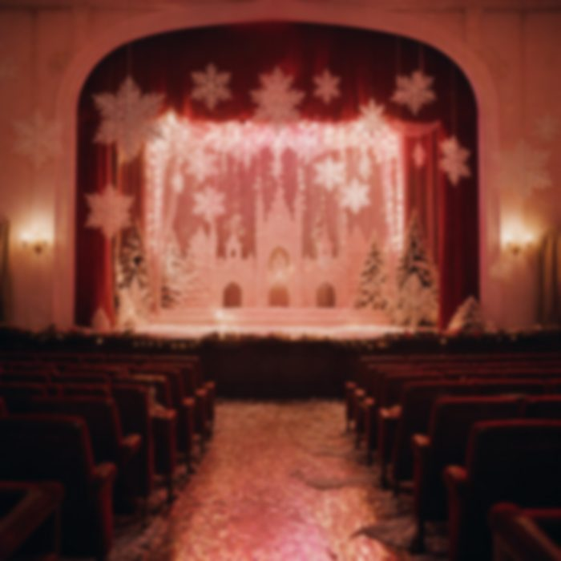

L'uscita dove tutto è cambiato
Questa è l'uscita in cui ho iniziato a crederci. A crederci davvero, non solo a sperarci.
Ma prima ce ne sono state altre. Uscite piccole, normali, che per me normali non erano per niente. E dopo una di quelle ti avevo mandato quel famosissimo proverbio cinese.
一日三秋. Un giorno lontano da te dura come tre autunni. E tu mi hai risposto col cuore.
Lì, lo ammetto, era cambiato un po' tutto. Un po' il tutto.
era fortissima.era veramente forte
Perché tu non eri mai stata così. Mai, in tutto quel tempo. E io me ne accorgevo, ogni volta.
E quando uscivamo, non mi ricordavo niente di quello che mi dicevi. Niente. Tornavo a casa e non avrei saputo ripeterti una frase. Perché stavo lì. Ti guardavo fissa negli occhi, e basta.
di quello che mi dicevi.
Mi ricordo i tuoi occhi.
Poi, prima di uscire, mi avevi mandato una foto. Con scritto:
Quella foto lì… mamma mia. Mi viene ancora il battito a pensarci. Veramente: sono qua che scrivo, e ci penso, e mi batte il cuore come allora.
E poi è arrivata lei. La sera dell'uscita dove è cambiato tutto.
Ci siamo messi dietro, in macchina, a guardare il filmato del mio spettacolo. Il mio spettacolo di Frozen. Io che ti facevo vedere una cosa mia, e tu lì, vicina.

E a un certo punto mi hai dato un bacio sulla guancia.
sulla guancia.
Un bacio sulla guancia. Sembra niente. Per me era tutto. E nella testa avevo una cosa sola:
devo dirglielo.
prima di uscire devo dirglielo.
devo dirglielo.
Siamo scesi dalla macchina. E lì fuori, finalmente, te l'ho detto.
E tu l'avevi sentito.
Sono tornato a casa con quella frase ancora in bocca. E da quella sera, nella testa, avevo un pensiero solo:
dove ci sarà anche lei,
il 29 aprile,
glielo devo dire.